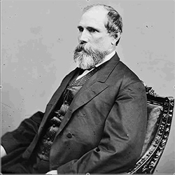
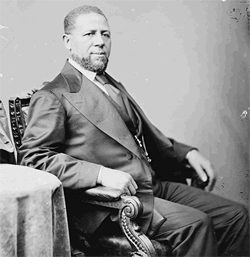
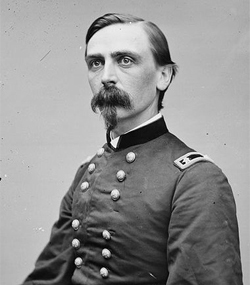

|
After an unsuccessful attempt of the last Confederate Governor of Mississippi to
call a convention, on June 13, 1865, President Johnson appointed William L.
Sharkey, a prewar Whig, Provisional Governor. The convention elected in
accordance with the Presidential Plan of Reconstruction abolished slavery,
|

James Lusk Alcorn
|
nullified the secession ordinance, and provided for the election of a new
legislature. In spite of the President's warning to enfranchise at least a few
African Americans, however, it refused to do so.
When in October the legislature met, it passed one of the most stringent
black codes in the South, failed to ratify the Thirteenth Amendment, and sent
Governor Sharkey and James Lusk Alcorn, a Unionist Whig who had served briefly
as a brigadier general in the Confederate state forces, to the Senate. Another
prewar Whig, Benjamin G. Humphreys, who had also been a Confederate general, was
elected Governor.
Mississippi's contumacy was one of the most glaring examples of the failure
of Presidential Reconstruction. The refusal of the state legislature to ratify
not only the thirteenth but also the Fourteenth Amendment and its reduction of
the freedmen to a status little removed from slavery facilitated the passage of
the Reconstruction Acts, which finally conferred political rights on the state's
black majority.
The new constitution framed in 1868 by the convention mandated by the law not
only sought to secure the freedmen's rights but also provided for a public
|

Hiram Revels
|
school system for both races. Because of clauses disfranchising large number of
ex-Confederates, however, the voters rejected it. During the election, General
Irvin McDowell, the military commander of the state, removed Governor Humphreys
and appointed General Adelbert Ames as Military Governor. The constitution was
finally accepted in 1869 after it was resubmitted with the disenfranchisement
clauses to be voted on separately, and Alcorn, who had joined the Republicans,
became Governor. According to a supplementary act by Congress, the newly elected
legislature had to ratify the Fifteenth as well as the Fourteenth Amendment
before the state could be readmitted, a condition it quickly fulfilled. Hiram
Revels and Ames became Senators, Revels being the first African American so
honored.
The Alcorn administration distinguished itself by establishing the new public
school system and by the appointment of an able judiciary. In 1871 the Governor
|

Adelbert Ames
|
was elected to the Senate, where he soon fell out with his colleague Ames, and
in 1873, the two Senators ran against each other for Governor, Alcorn relying on
the moderates and scalawags and Ames on the carpetbaggers and African Americans,
who insured his victory.
But the Ames administration was short-lived. Unable to effect needed
economies and hated by the conservatives, Ames fell victim to the Mississippi
Plan, a scheme of violence and intimidation designed to restore white Democratic
rule. After a series of riots, the systematic repression of the blacks, and the
Grant administration's refusal to intervene, in 1875 the conservatives
recaptured the legislature. Early in 1876, they brought trumped-up charges of
impeachment against the Governor, who resigned after these accusations were
withdrawn and left the state for good. The "Redeemers" now in power drastically
reduced expenditures, particularly in education, and gradually diminished the
black vote by redistricting and instituting more complicated methods of
registration. It was not until 189O, however, that the constitution of 1868 was
discarded and the freedmen, by then largely sharecroppers, were completely
disfranchised.
Source: Hans Trefousse, Historical Dictionary of Reconstruction
(Westport, CT: Greenwood Press, 1991), 148-49.
|